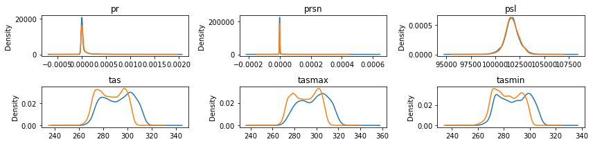
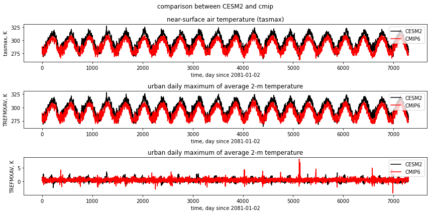
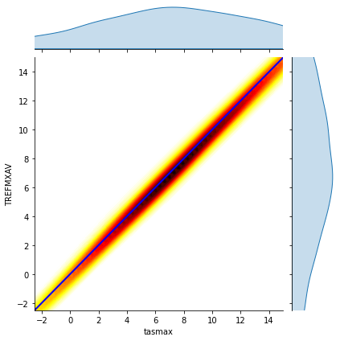
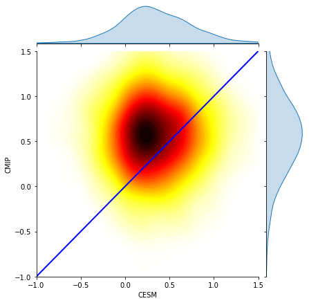

Example for CMIP6
Here, CESM2 data serves as the training data, and the ML model trained on CESM2 data is applied to CMIP6 data.
Reference:
- GitHub: https://github.com/NCAR/cesm2-le-aws
- Data/Variables Information: - https://ncar.github.io/cesm2-le-aws/model_documentation.html#data-catalog
- Reproduce CESM-LENS: https://github.com/NCAR/cesm2-le-aws/blob/main/notebooks/kay_et_al_lens2.ipynb
Step 0: load necessary packages and define parameters (no need to change)
[1]:
%%time
# Display output of plots directly in Notebook
%matplotlib inline
import matplotlib.pyplot as plt
import pandas as pd
import json
import intake
from flaml import AutoML
from sklearn.metrics import mean_squared_error, r2_score
from sklearn.model_selection import train_test_split
import warnings
warnings.filterwarnings("ignore")
import util
import math
import seaborn as sns
with open("./config_cmip6.json",'r') as load_f:
# param = json.loads(json.load(load_f))
param = json.load(load_f)
model = param["model"] # cesm2
urban_type = param["urban_type"] # md
city_loc = param["city_loc"] # {"lat": 40.1164, "lon": -88.2434}
l_component = param["l_component"]
a_component = param["a_component"]
experiment = param["experiment"]
frequency = param["frequency"]
cam_ls = param["cam_ls"]
clm_ls = param["clm_ls"]
forcing_variant = param["forcing_variant"]
time = slice(param["time_start"],param["time_end"])
member_id = param["member_id"]
estimator_list = param["estimator_list"]
time_budget = param["time_budget"]
features = param["features"]
label = param["label"]
clm_var_mask = param["label"][0]
CMIP6_url = param["CMIP6_url"]
activity_id = param["activity_id"]
experiment_id = param["experiment_id"]
institution_id = param["institution_id"]
table_id = param["table_id"]
/glade/work/zhonghua/miniconda3/envs/aws_urban/lib/python3.8/site-packages/xgboost/compat.py:31: FutureWarning: pandas.Int64Index is deprecated and will be removed from pandas in a future version. Use pandas.Index with the appropriate dtype instead.
from pandas import MultiIndex, Int64Index
CPU times: user 2.17 s, sys: 508 ms, total: 2.68 s
Wall time: 20 s
Step 1: load CESM2 data
[2]:
# get a dataset
ds = util.get_data(model, city_loc, experiment, frequency, member_id, time, cam_ls, clm_ls,
forcing_variant=forcing_variant, urban_type=urban_type)
ds['time'] = ds.indexes['time'].to_datetimeindex()
--> The keys in the returned dictionary of datasets are constructed as follows:
'component.experiment.frequency.forcing_variant'
100.00% [2/2 00:01<00:00]
different lat between CAM and CLM subgrid info, adjust subgrid info's lat
split into training and testing data
[3]:
mapping = {
"PRSN":"prsn",
"PRECT":"pr",
"PSL":"psl",
"TREFHT":"tas",
"TREFHTMN":"tasmin",
"TREFHTMX":"tasmax"
}
# create a dataframe
df = ds.to_dataframe().reset_index().dropna()
df["PRSN"] = (df["PRECSC"] + df["PRECSL"])*1000
df["PRECT"] = (df["PRECC"] + df["PRECL"])*1000
df_cesm = df.rename(columns=mapping)
# split the data into training and testing data
X_train, X_test, y_train, y_test = train_test_split(
df_cesm[features], df_cesm[label], test_size=0.1, random_state=42)
display(X_train.head())
display(y_train.head())
| pr | prsn | psl | tas | tasmax | tasmin | |
|---|---|---|---|---|---|---|
| 4253 | 6.419122e-06 | 6.332497e-13 | 101513.539062 | 310.400116 | 314.549225 | 306.138733 |
| 712 | 7.805734e-13 | 8.284239e-17 | 101903.125000 | 278.464813 | 283.987000 | 275.175720 |
| 4174 | 7.417410e-07 | 1.203946e-20 | 101324.992188 | 305.829956 | 313.299652 | 299.684784 |
| 1811 | 4.202696e-07 | 5.546324e-21 | 100377.546875 | 281.041534 | 282.307190 | 280.259918 |
| 5097 | 6.212562e-15 | 6.212559e-15 | 102881.742188 | 269.700897 | 270.963928 | 268.582184 |
| TREFMXAV | |
|---|---|
| 4253 | 314.797455 |
| 712 | 285.461212 |
| 4174 | 313.943756 |
| 1811 | 282.506958 |
| 5097 | 271.706543 |
Step 2: load CMIP6 data
[4]:
%%time
features = ['pr', 'prsn', 'psl','tas', 'tasmax', 'tasmin']
catalog = intake.open_esm_datastore('https://cmip6-pds.s3.amazonaws.com/pangeo-cmip6.json')
catalog_subset = catalog.search(
activity_id=activity_id,
experiment_id=experiment_id,
institution_id=institution_id,
variable_id=features,
table_id=table_id
)
datasets = catalog_subset.to_dataset_dict(zarr_kwargs={'consolidated': True, 'decode_times': True})
datasets
--> The keys in the returned dictionary of datasets are constructed as follows:
'activity_id.institution_id.source_id.experiment_id.table_id.grid_label'
100.00% [1/1 00:00<00:00]
CPU times: user 8.62 s, sys: 579 ms, total: 9.2 s
Wall time: 16.7 s
[4]:
{'ScenarioMIP.NOAA-GFDL.GFDL-ESM4.ssp370.day.gr1': <xarray.Dataset>
Dimensions: (bnds: 2, lat: 180, lon: 288, member_id: 1, time: 31390)
Coordinates:
* bnds (bnds) float64 1.0 2.0
* lat (lat) float64 -89.5 -88.5 -87.5 -86.5 ... 86.5 87.5 88.5 89.5
lat_bnds (lat, bnds) float64 dask.array<chunksize=(180, 2), meta=np.ndarray>
* lon (lon) float64 0.625 1.875 3.125 4.375 ... 355.6 356.9 358.1 359.4
lon_bnds (lon, bnds) float64 dask.array<chunksize=(288, 2), meta=np.ndarray>
* time (time) object 2015-01-01 12:00:00 ... 2100-12-31 12:00:00
time_bnds (time, bnds) object dask.array<chunksize=(15695, 2), meta=np.ndarray>
* member_id (member_id) <U8 'r1i1p1f1'
height float64 2.0
Data variables:
pr (member_id, time, lat, lon) float32 dask.array<chunksize=(1, 592, 180, 288), meta=np.ndarray>
prsn (member_id, time, lat, lon) float32 dask.array<chunksize=(1, 671, 180, 288), meta=np.ndarray>
psl (member_id, time, lat, lon) float32 dask.array<chunksize=(1, 452, 180, 288), meta=np.ndarray>
tas (member_id, time, lat, lon) float32 dask.array<chunksize=(1, 420, 180, 288), meta=np.ndarray>
tasmax (member_id, time, lat, lon) float32 dask.array<chunksize=(1, 420, 180, 288), meta=np.ndarray>
tasmin (member_id, time, lat, lon) float32 dask.array<chunksize=(1, 415, 180, 288), meta=np.ndarray>
Attributes: (12/48)
parent_experiment_id: historical
references: see further_info_url attribute
activity_id: ScenarioMIP
parent_variant_label: r1i1p1f1
initialization_index: 1
experiment: gap-filling scenario reaching 7.0 based on SSP3
... ...
comment: <null ref>
parent_activity_id: CMIP
source_id: GFDL-ESM4
title: NOAA GFDL GFDL-ESM4 model output prepared for CM...
source: GFDL-ESM4 (2018):\natmos: GFDL-AM4.1 (Cubed-sphe...
intake_esm_dataset_key: ScenarioMIP.NOAA-GFDL.GFDL-ESM4.ssp370.day.gr1}
[5]:
%%time
# define the dataset name in the dictionary and the "member_id"
df_cmip = datasets['ScenarioMIP.NOAA-GFDL.GFDL-ESM4.ssp370.day.gr1']\
.sel(member_id = 'r1i1p1f1',
time = slice(param["time_start"], param["time_end"]))\
.sel(lat = param["city_loc"]["lat"],
lon = util.lon_to_360(param["city_loc"]["lon"]),
method="nearest")\
[features].load()\
.to_dataframe().reset_index()
df_cmip.head()
CPU times: user 22.8 s, sys: 9.92 s, total: 32.7 s
Wall time: 17.8 s
[5]:
| time | pr | prsn | psl | tas | tasmax | tasmin | lat | lon | member_id | height | |
|---|---|---|---|---|---|---|---|---|---|---|---|
| 0 | 2081-01-02 12:00:00 | 1.298217e-08 | 0.000000e+00 | 101977.695312 | 273.261047 | 275.202179 | 270.915100 | 40.5 | 271.875 | r1i1p1f1 | 2.0 |
| 1 | 2081-01-03 12:00:00 | 2.697389e-06 | 3.237360e-08 | 102718.125000 | 272.662384 | 275.534607 | 269.958557 | 40.5 | 271.875 | r1i1p1f1 | 2.0 |
| 2 | 2081-01-04 12:00:00 | 1.689230e-05 | 0.000000e+00 | 101962.062500 | 279.614990 | 284.833435 | 275.647797 | 40.5 | 271.875 | r1i1p1f1 | 2.0 |
| 3 | 2081-01-05 12:00:00 | 4.039772e-05 | 0.000000e+00 | 101191.835938 | 286.547546 | 287.837524 | 284.678497 | 40.5 | 271.875 | r1i1p1f1 | 2.0 |
| 4 | 2081-01-06 12:00:00 | 8.000434e-05 | 0.000000e+00 | 101059.062500 | 283.049957 | 286.511383 | 278.161652 | 40.5 | 271.875 | r1i1p1f1 | 2.0 |
Step 3: compare CESM2 training and CMIP6 data
[6]:
fig = plt.figure(figsize=(12,3))
idx = 1
for var in features:
ax = fig.add_subplot(math.ceil(math.ceil(len(features)/3)), 3, idx)
X_train[var].plot.kde(ax=ax)
df_cmip[var].plot.kde(ax=ax)
idx+=1
ax.set_title(var)
plt.tight_layout()
plt.show()

Step 4: automated machine learning
train a model (emulator)
[7]:
%%time
# setup for automl
automl = AutoML()
automl_settings = {
"time_budget": time_budget, # in seconds
"metric": 'r2',
"task": 'regression',
"estimator_list":estimator_list,
}
# train the model
automl.fit(X_train=X_train, y_train=y_train.values,
**automl_settings, verbose=-1)
print(automl.model.estimator)
LGBMRegressor(colsample_bytree=0.6649148062238498,
learning_rate=0.17402065726724145, max_bin=255,
min_child_samples=3, n_estimators=58, num_leaves=15,
reg_alpha=0.0009765625, reg_lambda=0.006761362450996487,
verbose=-1)
CPU times: user 29min 41s, sys: 5.55 s, total: 29min 47s
Wall time: 29.9 s
evaluate the model
[8]:
y_pred = automl.predict(X_test)
print("root mean square error:",
round(mean_squared_error(y_true=y_test, y_pred=y_pred, squared=False),3))
print("r2:",
round(r2_score(y_true=y_test, y_pred=y_pred),3))
root mean square error: 0.593
r2: 0.998
apply and test the machine learning model
use
automl.predict(X) to apply the model[9]:
df_cmip[label] = automl.predict(df_cmip[features]).reshape(df_cmip.shape[0],-1)
Step 5: visualization
[10]:
fig, (ax1,ax2,ax3) = plt.subplots(3,1,figsize=(12,6))
fig.suptitle('comparison between CESM2 and cmip')
df_cesm["tasmax"].plot(label="CESM2",c="k",ax=ax1)
df_cmip["tasmax"].plot(label="cmip",c="r",ax=ax1)
ax1.set_title("near-surface air temperature (tasmax)")
ax1.set_ylabel("tasmax, K")
ax1.set_xlabel("time, day since 2081-01-02")
ax1.legend(["CESM2","CMIP6"])
df_cesm["TREFMXAV"].plot(label="CESM2",c="k",ax=ax2)
df_cmip["TREFMXAV"].plot(label="cmip",c="r",ax=ax2)
ax2.set_title("urban daily maximum of average 2-m temperature")
ax2.set_ylabel("TREFMXAV, K")
ax2.set_xlabel("time, day since 2081-01-02")
ax2.legend(["CESM2","CMIP6"])
(df_cesm["TREFMXAV"]-df_cesm["tasmax"]).plot(label="CESM2",c="k",ax=ax3)
(df_cmip["TREFMXAV"]-df_cmip["tasmax"]).plot(label="cmip",c="r",ax=ax3)
ax3.set_title("urban daily maximum of average 2-m temperature")
ax3.set_ylabel("TREFMXAV, K")
ax3.set_xlabel("time, day since 2081-01-02")
ax3.legend(["CESM2","CMIP6"])
plt.tight_layout()
plt.show()

[11]:
# reference: https://stackoverflow.com/questions/53964485/seaborn-jointplot-color-by-density
x = df_cesm["tasmax"]-df_cmip["tasmax"]
y = df_cesm["TREFMXAV"]-df_cmip["TREFMXAV"]
plot = sns.jointplot(x, y, kind="kde", cmap='hot_r', n_levels=60, fill=True)
plot.ax_joint.set_xlim(-2.5,15)
plot.ax_joint.set_ylim(-2.5,15)
plot.ax_joint.plot([-2.5,15], [-2.5,15], 'b-', linewidth = 2)
plt.show()

[12]:
# reference: https://stackoverflow.com/questions/53964485/seaborn-jointplot-color-by-density
x = df_cesm["TREFMXAV"]-df_cesm["tasmax"]
y = df_cmip["TREFMXAV"]-df_cmip["tasmax"]
plot = sns.jointplot(x, y, kind="kde", cmap='hot_r', n_levels=60, fill=True)
plot.ax_joint.set_xlim(-1,1.5)
plot.ax_joint.set_ylim(-1,1.5)
plot.ax_joint.set_xlabel("CESM")
plot.ax_joint.set_ylabel("CMIP")
plot.ax_joint.plot([-1,1.5], [-1,1.5], 'b-', linewidth = 2)
plt.show()
